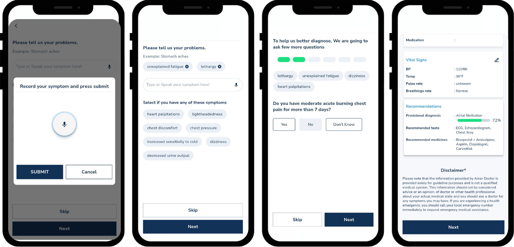
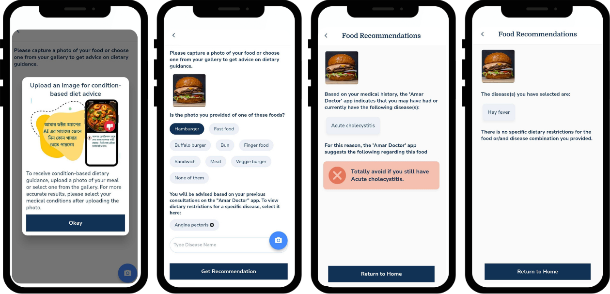

About
As an R&D Engineer at MedAi Limited, I design AI-driven healthcare solutions focused on human-centered computing. With over 4+ years of experience, I build culturally-aware solutions for AmarDoctor, improving primary care access for underserved communities.
I earned my Bachelor’s degree in Computer Science and Engineering from Bangladesh University of Engineering and Technology (BUET). For my thesis, I worked under the supervision of Professor Dr. Md. Monirul Islam. on Bengali OCR Using Deep Learning, where I built a dataset from printed Bengali documents and trained deep learning model using CNNs, RNNs, and LSTMs, achieving an accuracy of 87.3%.
Preprints
-
Generative AI for Trauma-Informed Care
Nazmun Nahar; "Healing Through Generative Vision: A Multimodal AI Framework" (Accepted at AIHealth). pdf (2026) -
AmarDoctor
Nazmun Nahar et al. "An AI-Driven, Multilingual, Voice-Interactive Digital Health Application for Primary Care Triage and Patient Management to Bridge the Digital Health Divide for Bengali Speakers". (arXiv arXiv:2510.24724). pdf (2025) -
Biomedical ASR in Bengali
Shariar Kabir; Nazmun Nahar; et al. "Automatic Speech Recognition of Biomedical Data in Bengali Language." (arXiv:2406.12931). pdf (2024)
Professional Experience
Research & Development Engineer
MedAi Limited | 2021 – Present
- Developed AmarDoctor, an AI-powered multilingual telemedicine platform.
- Engineered the Symptom Checker & Clinical Decision Support System.
- Architected scalable AWS cloud infrastructure and TypeDB knowledge graphs.
- Led backend engineering using Django REST Framework and API-first architecture.
Instructor
Bangladesh Institute of Science & Technology | 2019 – 2020
- CS520223 Microprocessors and Assembly (theory and lab).
- CS540206 Computer Graphics (lab).
- CS540219 Network and Information Security (theory).
Projects
AmarDoctor – Digital Health Platform
Problem: Lack of AI-driven primary care access for Bengali speakers, engendering healthcare accessibility barriers for South Asian populations.
Solution: Designed and developed the AmarDoctor platform, featuring a colloquial-language symptom checker and a clinical decision support system that streamlines consultations and reduces physician burnout.
Impact: A first-of-its-kind AI-powered platform that has served over 12,000 Bengali-speaking users, delivering more than 4000 personalized healthcare consultations as of now.
Award: AmarDoctor was selected as a Solver Team in the 2024 MIT Solve Global Health Equity Challenge for its AI-powered, culturally inclusive telemedicine platform serving Bengali-speaking communities. The award recognizes its impact in advancing equitable access to primary care.
Medical Recrods Digitization Pipeline
Problem: Paper-based records block access to patients’ long-term medical history at the point of care.
Solution: LLM-powered OCR system for automated clinical data extraction.
Impact: Improves patient safety and treatment accuracy through timely access to historical clinical data.
AI Symptom Checker & CDSS
Problem: Many patients face difficulty articulating their symptoms and identifying the right specialist.
Solution: Designed a symptom checker that suggests relevant symp3oms, asks targeted follow-up questions, and provides provisional diagnoses along with specialist recommendations.
Impact: Achieved 81% diagnostic accuracy validated against physician assessments using 185 simulated patient cases, significantly improving triage efficiency and accessibility to care.

Medical History-Driven Dietary Recommendation System
Problem: Gap between visual food recognition technology and personalized medical dietary counseling for chronic disease management.
Solution: Integrated computer vision-based food classification with medical knowledge systems for condition-specific dietary filtering and recommendation generation.
Impact: Enables real-time food guidance automation, potentially improving patient adherence to medical dietary restrictions to manage chronic conditions.

Medical Assistant Chatbot → LLM-Powered Conversational Interface
Problem:Users need to describe symptoms and access care without navigating complex interfaces
Solution:Started as a RASA-based intent classifier for mental vs. physical health triage; evolved into an LLM-powered assistant that serves as AmarDoctor’s primary entry point, handling symptom assessment, appointment booking, and care navigation in natural dialogue.
User Experience: Natural dialogue-based interface adapting to user abilities and communication styles.

Bengali OCR Using Deep Learning
Developed a novel word image dataset and trained deep neural networks (CNN, RNN, LSTM) to digitize printed Bengali literature.
SaaS Client Management System
Built a JWT-authenticated platform with PostgreSQL and AWS for managing secure healthcare API access and subscription tiers.